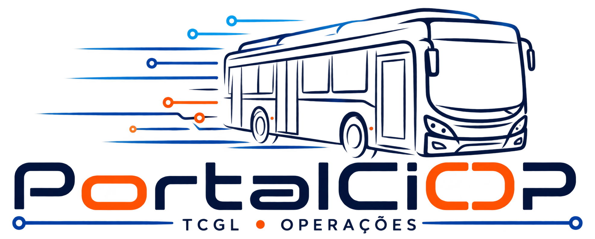

No horário
84,0%
110 de 131 viagens (fictício)

Dados fictícios · sem gravação · Portal CIOP
Corpo Inter 14. Texto principal usa --portal-text.
Secundário: período 01/10/2026 a 26/10/2026 · fonte fictícia
91,40%
SVG 20×20, traço 1.8, currentColor
| Linha | Situação | Viagens | IPV |
|---|---|---|---|
| 999 | No horário | 40 | 96,10% |
| 998 | Adiantado | 12 | 88,00% |
| 997 | Atrasado | 8 | 91,25% |
Carregando período…
Sem dados neste recorte.
Não foi possível carregar os dados. Nada foi gravado.
01/10/2026 a 26/10/2026 · 3 linhas fictícias · atualizado às 15:00
Prévia de documento (papel branco nos dois temas)
Veículo 0000, linha 999. Texto de papel permanece #102c53 sobre branco.